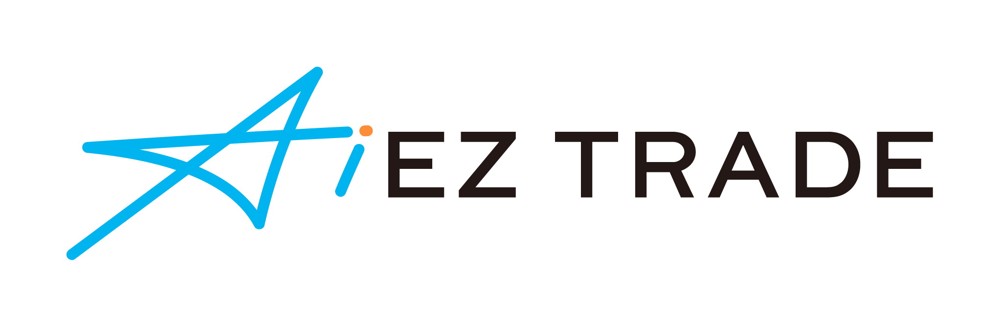
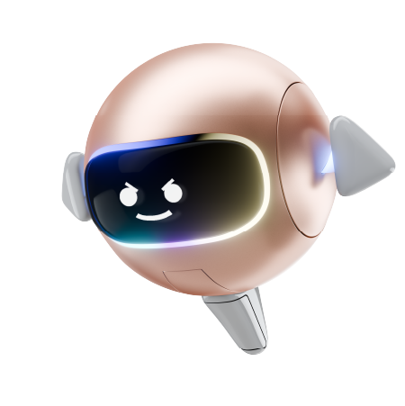
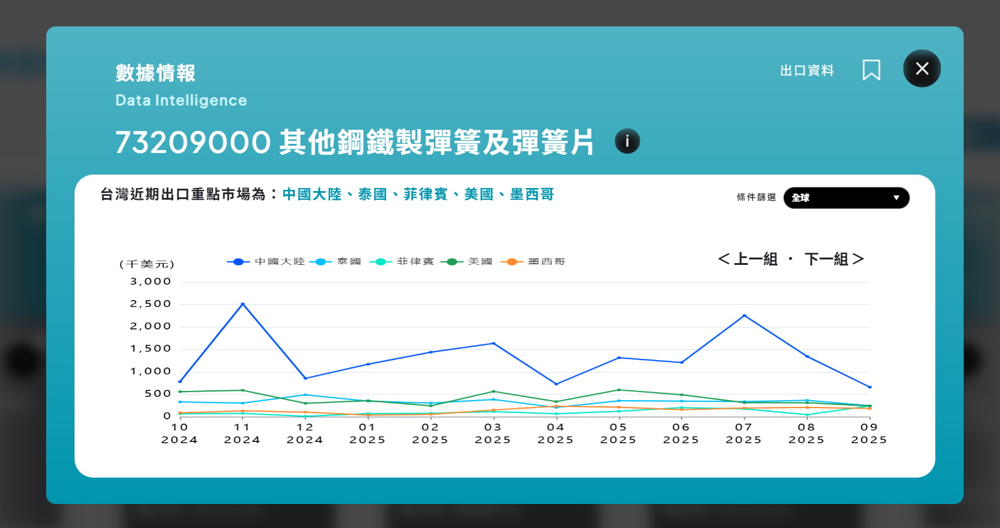
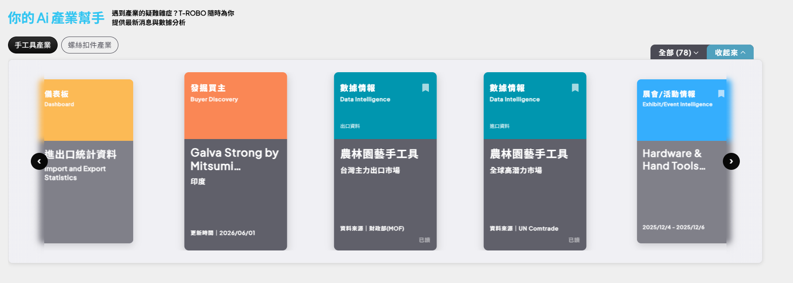
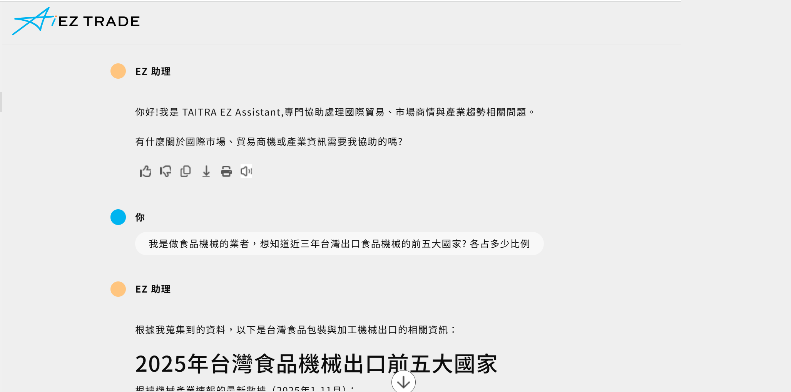
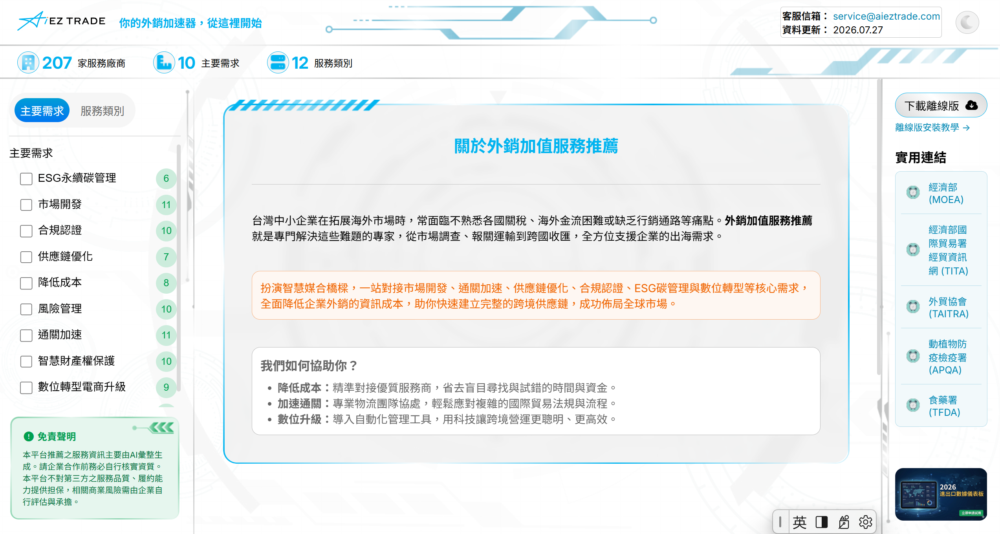
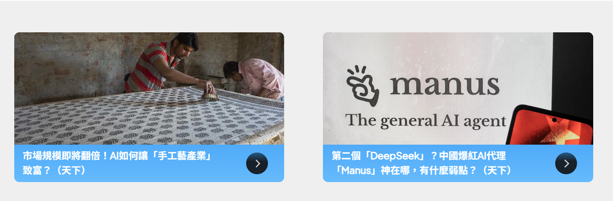
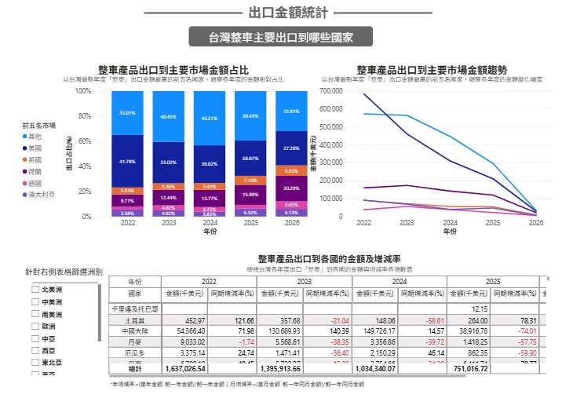

和「EZ 助手」對話
找到市場與商機
深度整合經貿數據與 AI 應用的拓銷服務解決方案
同場加映｜企業進出口數據看板

aieztrade.com運作方式
資料我們準備好，重點 AI 幫你挑
把權威資料整理成可用的情報
彙集聯合國（UN）、財政部（MOF）等多方數據來源， 結構化整理不同來源的數據。
量身打造的貿易情報
理解不同企業與使用者的需求， 主動篩選並推播最合適的貿易情報。

T-ROBO 你的 AI 經貿盟友
第一步
先回答幾題，把你的需求注入模型
題組依公司背景資訊設定，你只要照自己實際的業務情境作答。
- ▸出口實績你的產品實際賣到哪些國家
- ▸稅籍登記・商工登記系統自動比對公開資料
- ▸關注市場與產品設定隨時可以回來調整
→ 從這一刻起，它給你的每一份情報都是為你量身打造。
T-ROBO 實際操作 · 70 秒
使用情境 1
輸入產品，報表、展會、買主一次端出
依你的出口實績生成專屬報表，產品在全球市場的定位與出口重點市場一次列出。
資料來源｜財政部 MOF・聯合國 UN Comtrade

精準對齊 HS Code 與行業慣用名稱，指引關鍵展會活動與潛在買家。

使用情境 2
跨境問題卡關沒人問？EZ 助手 24 小時待命
沒有題目限制，貿易上任何卡關的問題都能問。
- ▸關稅稅則這個品項出口到當地要課多少
- ▸市場商情目標國最近的情勢與需求變化
- ▸跨境貿易疑難雜症文件、流程、法規，隨時發問、即時回覆
→ www.aieztrade.com/ez-assistant 現在就能打開來問。

EZ 助手實際對話 · 問「近三年台灣出口食品機械的前五大國家？」
使用情境 3
資源東拼西湊？外銷整合＋會員商情，一站到位

① 外銷資源一站整合 207 家服務廠商｜10 主要需求｜12 服務類別
電商・物流・Google 官方認證與 Shopify、歐斯瑞（Astral Web）等生態系

② 會員專屬商情 商業週刊、天下雜誌會員專屬文章與影音
登入 AiEZ TRADE 平台即可一站掌握最新商情
※ 平台推薦之服務資訊主要由 AI 彙整生成，企業合作前請自行核實資質。
免費 現在就可以掃
每週推播，第一手經貿情報
- ▸定期中東情勢分析局勢變化如何影響你的出貨與報價
- ▸全球機械產業報告產業別深度報告，固定時間推播
- ▸平台新功能通知AiEZ TRADE 有新東西第一時間知道
掃描立即加入 AiEZ TRADE LINE@
同場加映
企業進出口數據看板
從數據看見市場，讓市場看見你。
01 問題盤點
中小企業拓銷的三大痛點
資訊不對稱
不知道產品實際出口到哪些國家，也不了解買家真正的需求。
決策靠經驗
業務說「這個市場有機會」，但有多少機會，沒人說得準。
價格被砍
不知道行情，報價沒底氣；面對低價競爭，只能跟著降。
02 999 元買到什麼
一整年專屬訂閱 · 平均一天不到 3 元
財政部關務署 進出口報關統計
不是 AI 生成，可直接作為內部提案與客戶溝通的依據。
- ✓企業專屬客製化看板依你的 HS Code 與產品建置，看到的是自己的市場
- ✓視覺化互動圖表不需要數據背景，會看圖就會用
- ✓全年無限次線上查閱一個網址，想查就查、不限次數
- ✓每月資料自動更新市場在變，數據跟著變
- ✓可查 5 年歷史數據年度看大趨勢，月度看季節性波動
02 各種選擇比一比
一樣要看數據，四條路的成本差多少
經濟實惠首選
| 自己上網拼湊 | 付費資料庫 | 聘數據分析師 | 本方案 | |
|---|---|---|---|---|
| 成本 | 業務的時間成本 | 數十萬起跳 | 月薪 5–8 萬 | NT$ 999／年 |
| 資料來源 | 網路雜訊 | 商業資料庫 | 視分析師而定 | 財政部關務署 |
| 客製化 | 無 | 通用報表 | 高 | 高（依 HS Code） |
| 更新頻率 | 看你勤勞 | 多為季度 | 視排程 | 每月 |
03 應用場景 01
市場掃描：找出藍海
一眼洞察全球市場對貴公司產品的需求消長。
化學品商外銷東南亞
目標國進口需求穩定成長
本地競爭者缺席，屬藍海市場
參考數據制定具競爭力報價
→ 實現高毛利外銷

出口金額統計 · 主要市場占比與五年趨勢（以自行車產業為例）
03 應用場景 02
趨勢監控：判斷成長期還是飽和期
食品商開發第二成長曲線
既有日本市場已平緩、成長停滯
運用數據看板掃描，鎖定馬來西亞高成長
結合貿協 Halal 清真認證輔導
→ 數據 × 產業 Know-how 無縫對接
看板可切換年度／月度：年度看大趨勢，月度看季節性波動。
目標市場進出口量趨勢 · 示意圖，非真實資料
03 應用場景 03
價格防禦：用「科學牌價」談判

出口單價統計 · 各市場平均單價與增減率
「你這個報價太高了。」
「⋯⋯我們品質比較好。」
「依關務署統計，這個市場近三年平均單價落在這個區間。」
- ▸看清各區域真實價格帶知道報價區間在哪
- ▸據理力爭，不被無理砍價守住本來就應該有的利潤
04 申請流程
六個步驟，20 個工作天內交付
- ① 進出口廠商登記
- ② 1 年內未受處分
- ③ 3 年內進出口實績
- ④ 受輔導產品臺灣產製
- ⑤ 資本組成不含陸資
- ⑥ 符合智財權規定
- ⑦ 符合中小企業標準
※ 中小企業認定標準：資本額 1 億元以下；或資本額 1 億元以上、但員工人數 200 人以下者。
立即報名
年度限量
300 家
即止
額滿即止，歡迎報名或預約線上 Demo。
活動頁面 events.taiwantrade.com/115Dashboard
Email tradedashboard@taitra.org.tw
電話 02-2725-5200 #1713 #77006
掃描直接填寫報名表單